1. Creating Your First Album
Tap the plus button to get started.
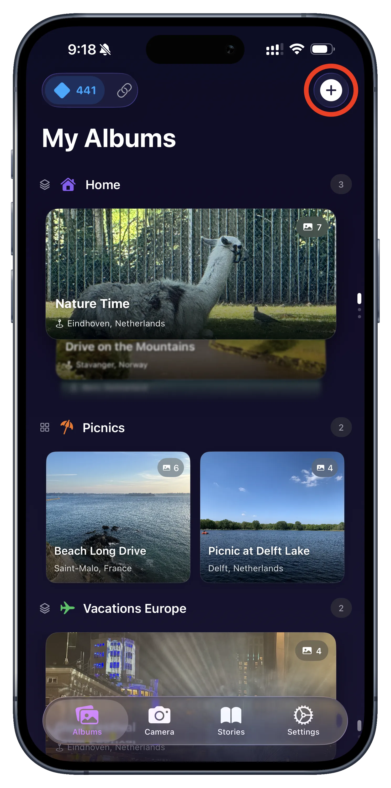
From your main albums view, tap the '+' icon in the top right corner.
Select "New Album" from the menu.
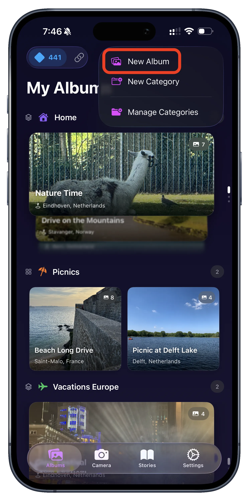
Choose whether you want to create a new album or a new category.
Name your album and set its location.
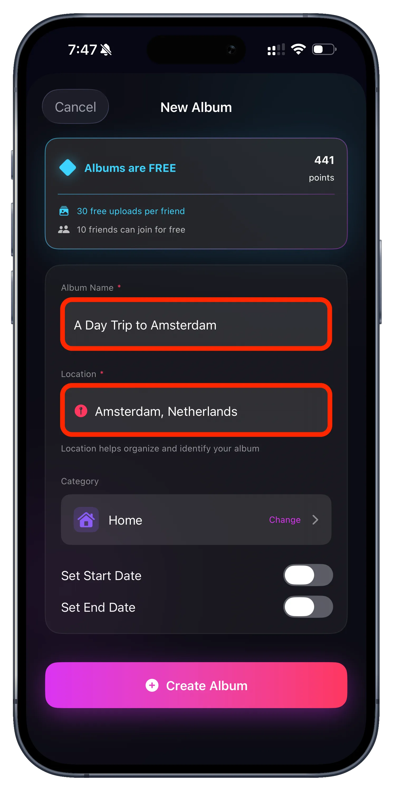
Give your album a descriptive name and location. You can also pick a category.
Album Created Successfully.
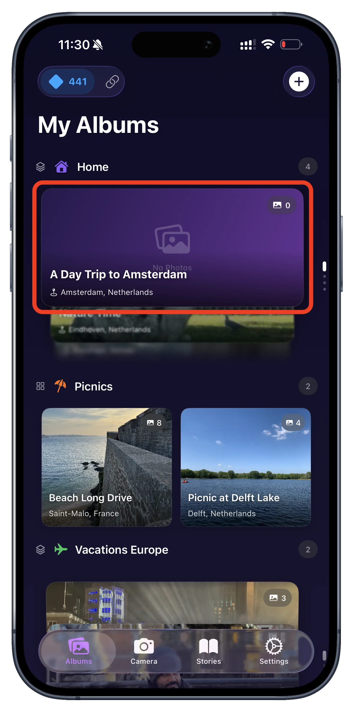
Your new empty album is now visible on the main screen, ready for photos.
2. Adding Photos
Tap "Import Photos" inside your new album.
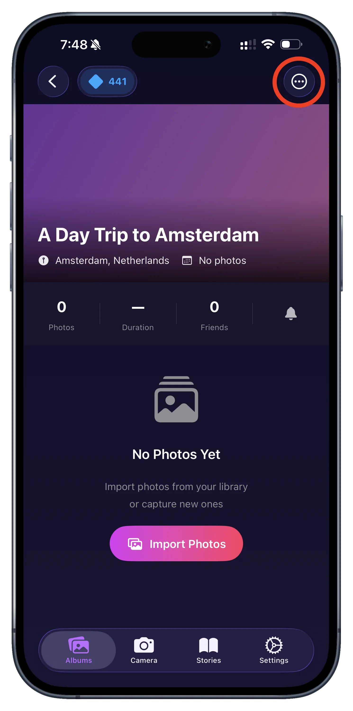
Inside your album, tap the 'Import Photos' button to begin selecting photos from your library.
Or use the options menu (three dots).
You can always find the "Import Photos" option in the album's settings menu, where you can select photos from your photos selection menu.
Confirm your selection.
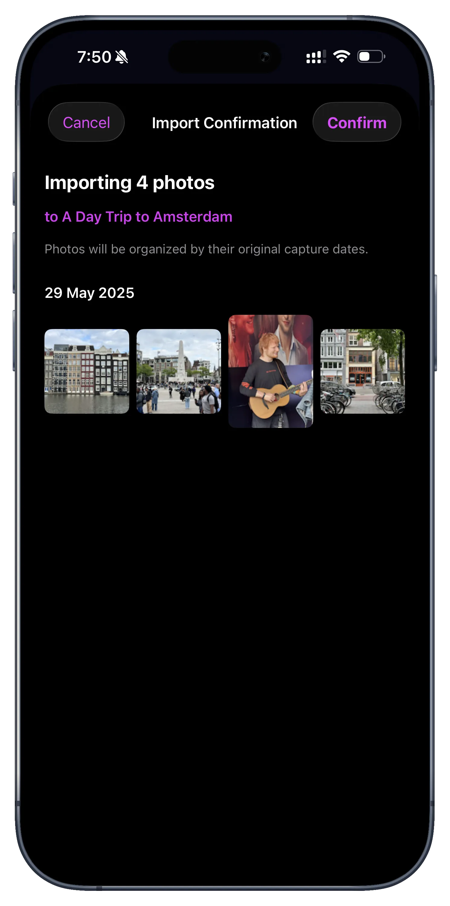
Review the photos you've selected and tap "Confirm" to start the sync.
Your photos are now synced!
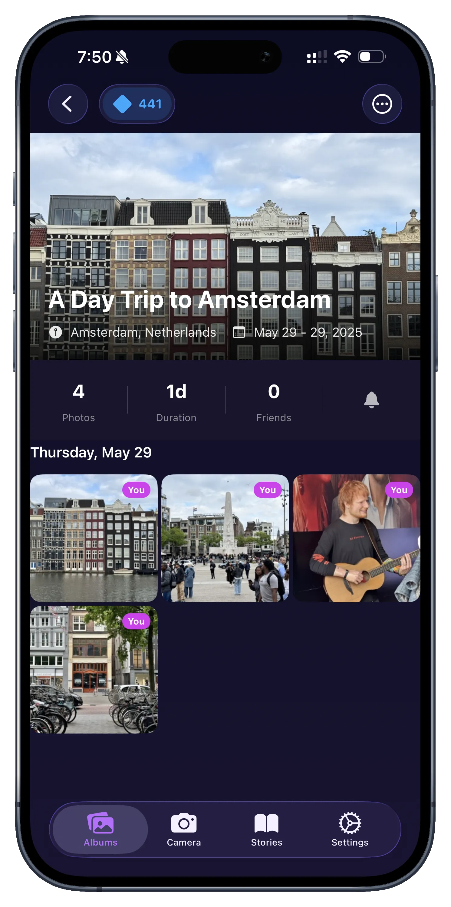
The photos will appear in your album, organized by date and quality.
3. Sharing with Friends
Open the "Friends" tab to invite others.
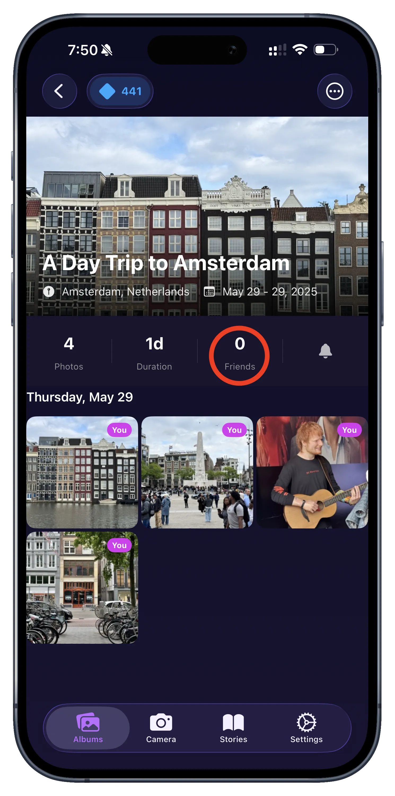
Switch to the 'Friends' tab at the bottom of the screen to manage your photo sharing.
Tap "Invite More Friends".
This will open the system share sheet for your invitation link.
Choose how to share the link.
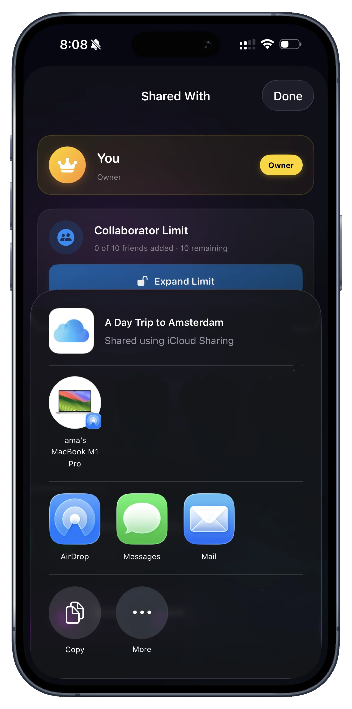
Select Messages, Mail, or any other app to send the secure iCloud invite.
Send the invite via iMessage.
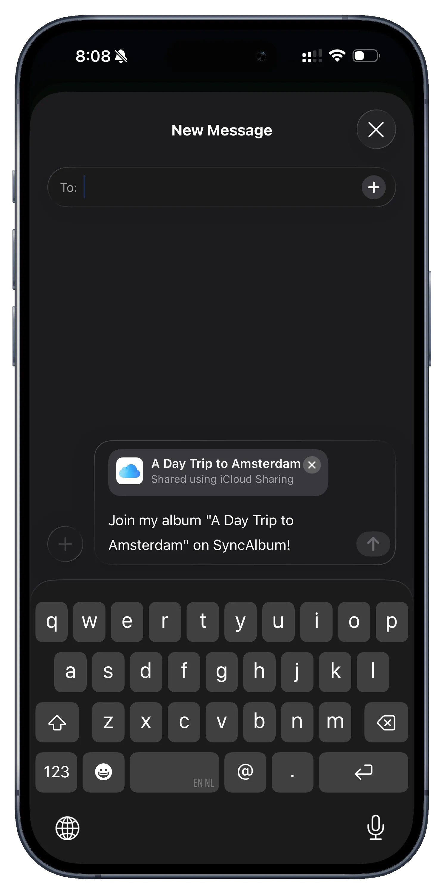
Your friend will receive a message with a link to join your private album instantly.
4. Joining an Album (Guest)
Receive an invitation message.
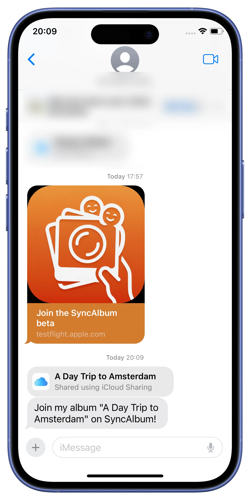
Your friend receives the iMessage with your secure iCloud link.
Tap the link to open SyncAlbum.
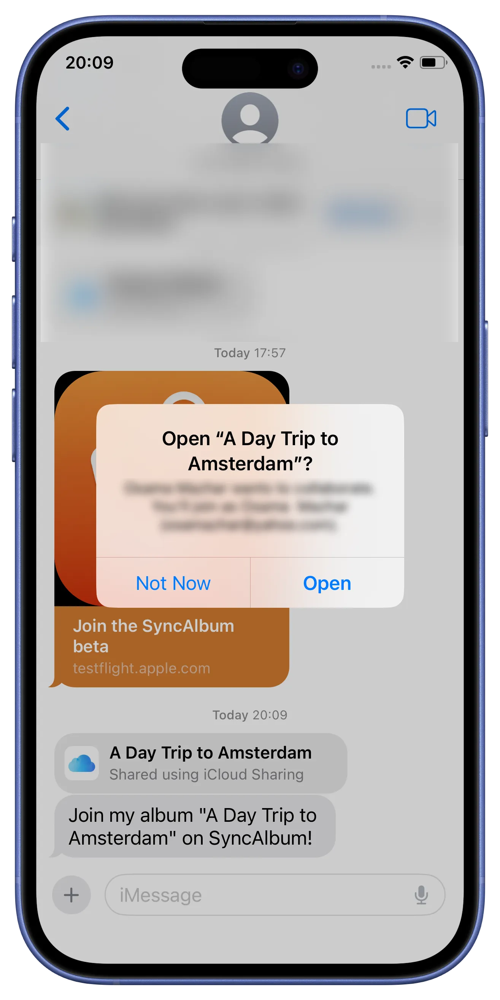
Tapping the link opens the invitation directly in the SyncAlbum app.
Request access to the album.
The guest confirms they want to join the private shared album.
Wait for the owner's approval.
The request is sent securely. High-privacy albums require the owner's approval.
5. Approving New Members
Receive a join request.

As the owner, you'll receive an instant notification when a friend asks to join.
Approve the request instantly.

Open the request to verify the friend and grant them access to the album.
6. Starting the Sync (Guest)
Notification of approval.
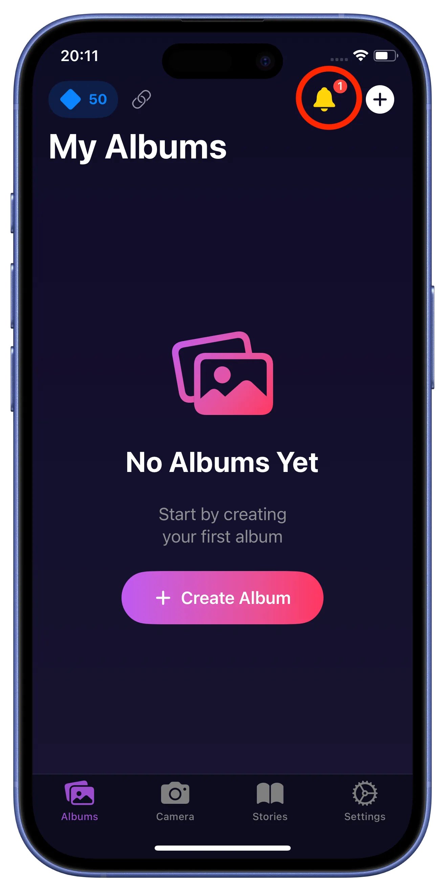
The friend is notified immediately once their request has been approved.
Ready to join.
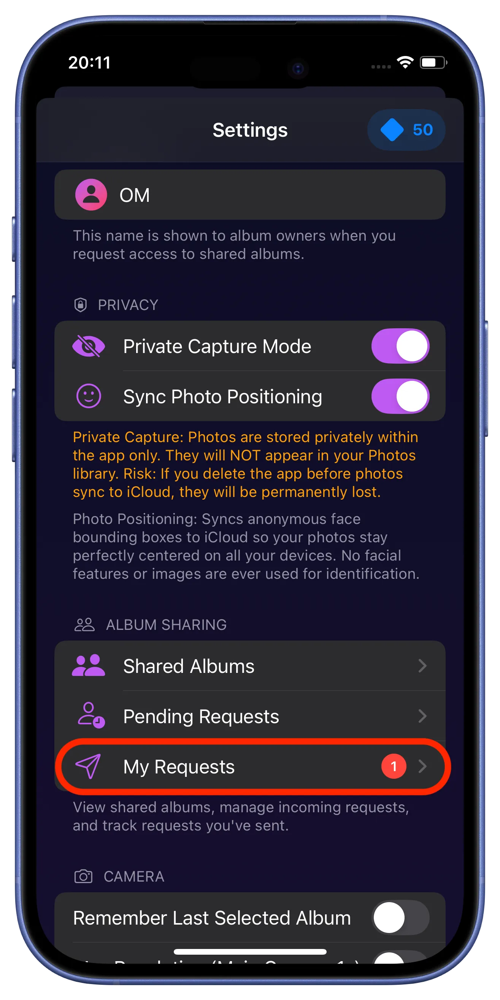
The updated invitation screen now allows the guest to officially join.
Tap "Add Album".
The friend taps 'Add Album' to link the shared folder to their device.
Downloading metadata.
SyncAlbum securely prepares the album structure and photo distribution data.
Album joined successfully.
The album is now active in the guest's library.
Album appears in your library.
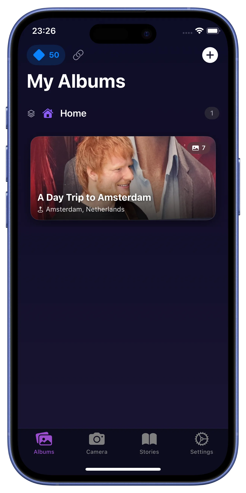
The new shared album is now visible in your main "My Albums" view.
7. Collaborating & Managing
Photos start appearing.
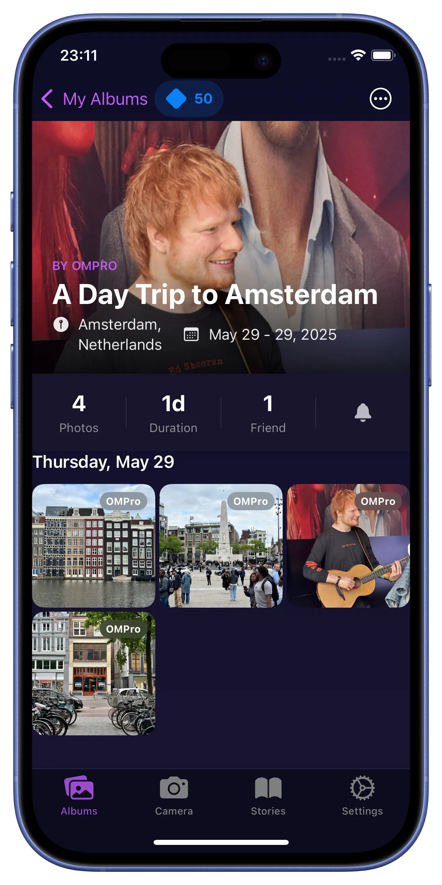
Photos contributed by the owner and other friends begin downloading instantly.
Guests can contribute photos too.
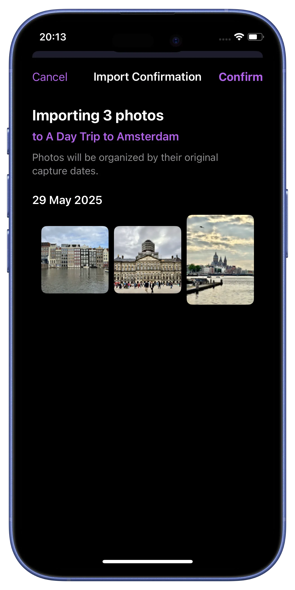
Every approved collaborator can import their own photos to the shared album.
Check active collaborators.
Owners can monitor who is currently contributing to the album.
Manage member details.
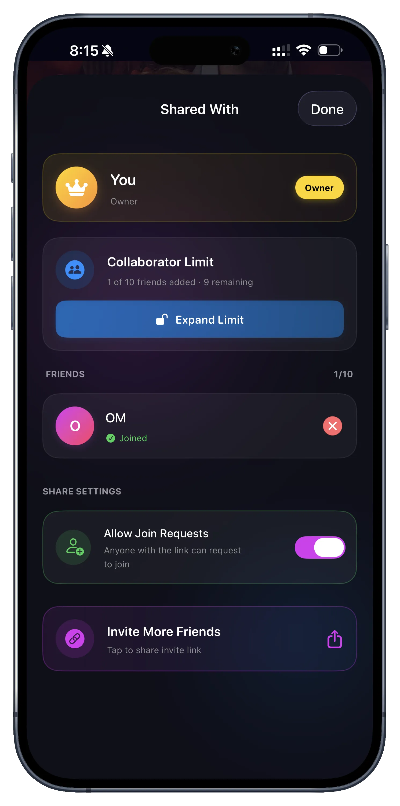
View specific permissions and contribution stats for each member.
8. Photo Distribution
Monitor contribution counts.
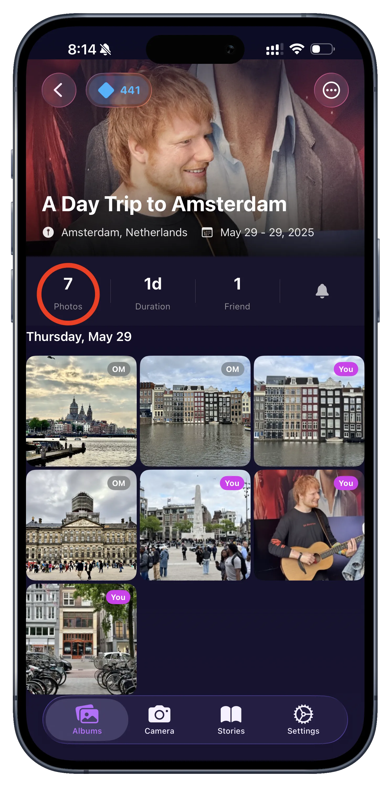
See a high-level view of how many photos have been added by each person.
Detailed usage breakdown.
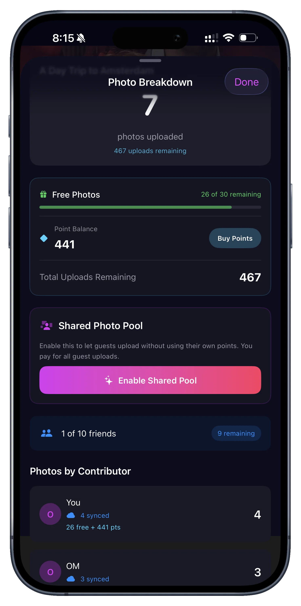
Track exactly how many photos were contributed by each collaborator for transparency.
Still need help?
If you haven't found the answer you're looking for, please contact our support team.
Contact Support